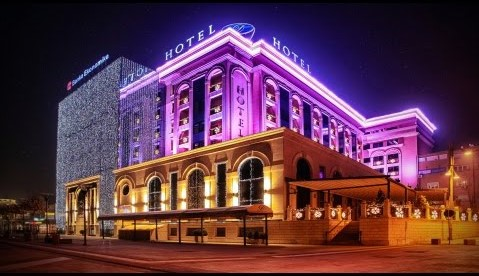
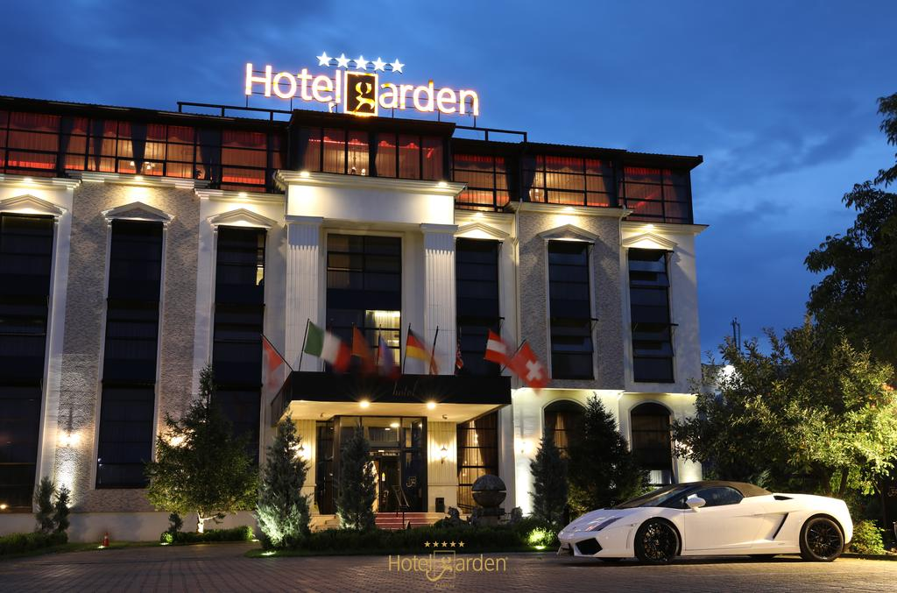
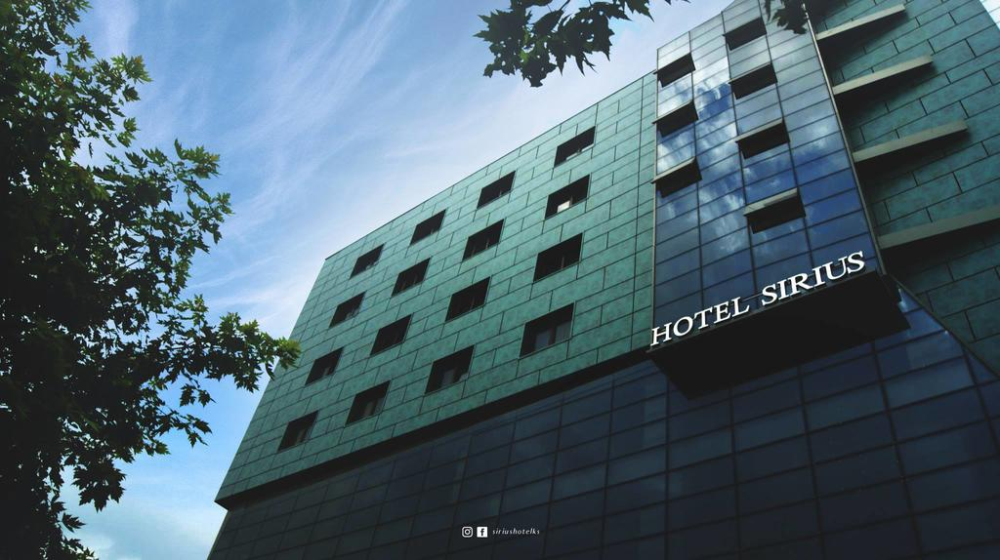
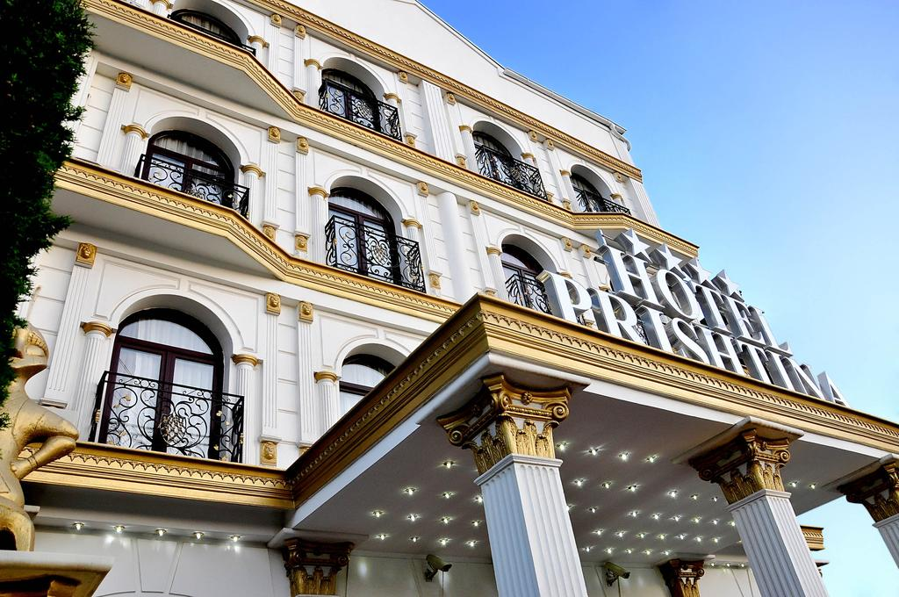
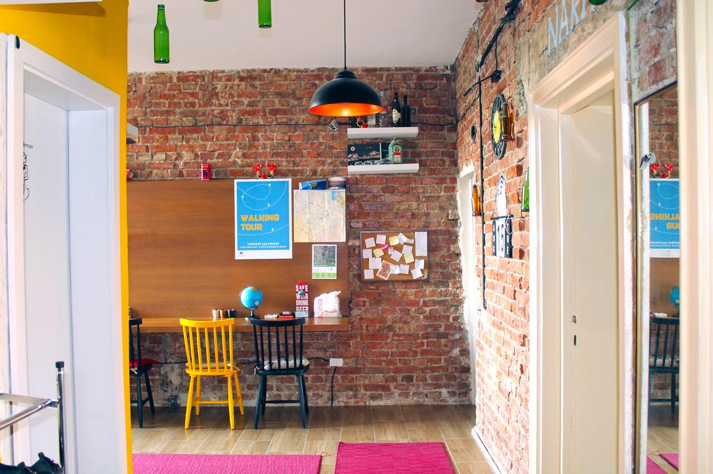
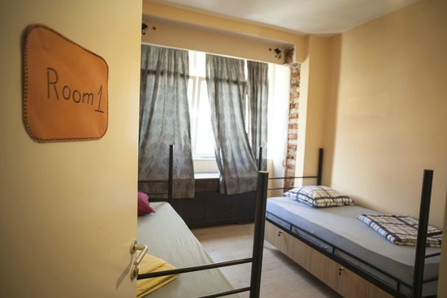
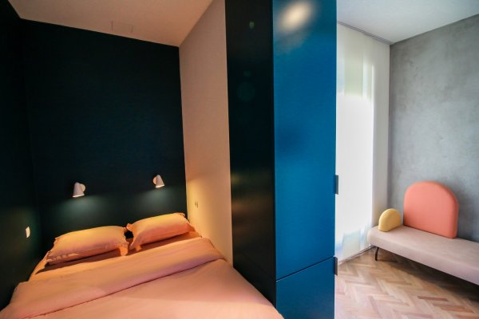
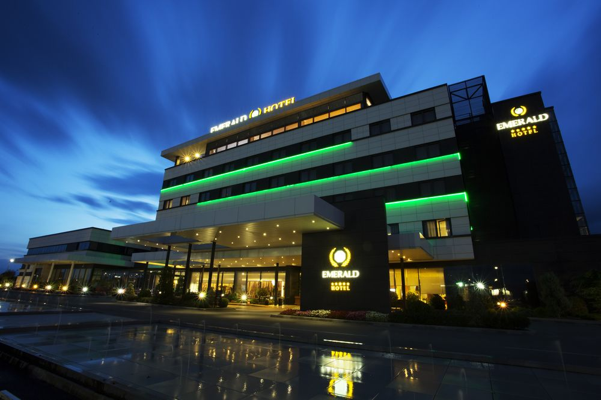
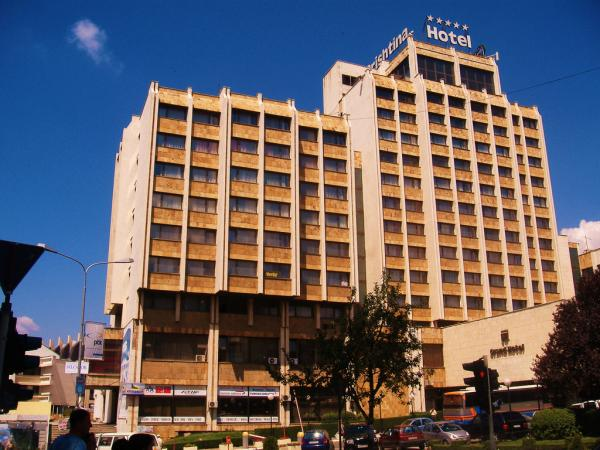

-

Swiss Diamond Hotel
★ ★ ★ ★ ★E vendosur në një ndërtesë madhështore të rrethuar nga bare, restorante dhe kafene, ky hotel luksoz është një 6-minuta në këmbë nga Muzeu i Kosovës dhe 1 km nga stacioni i trenit në Prishtinë.
Dhoma dhe suita elegante në një hotel elegant me spa, një sallë pritjeje dhe ngrënie, plus një bar komod -

Hotel Garden
★ ★ ★ ★ ★E vendosur në një zonë të qetë nën-urbane për t'u siguruar klientët të gjejnë netët më të qetë në dhoma luksoze më një interior klasike të projektuar me kujdes dhe stil. Vetem 2 km nga qendra e Prishtinës.
-

Hotel Sirius
★ ★ ★ ★ ★E vendosur në qendër të Prishtinës me stafin profesional, Hotel Sirius gjithmonë ju bën të ndiheni të veçantë. Si një qendër konferencë Hotel Sirius ofron 7 dhoma ekskluzive të konferencave me hapësirë fleksibël dhe vëmendje të përsosur në detaje. Gëzoni darkën në restorantin tonë të vendosur në katin e 8-të, duke ofruar çdo vizitë me një pamje madhështore të Prishtinës.
-

Hotel Prishtina
★ ★ ★ ★ ☆I ndodhur 500 m nga Monumenti i Newborn në Prishtinë, Hotel Prishtina përmban një pishinë indoor. WiFi ofrohet në të gjithë hotelin.
Dhomat janë të dekoruara në stilin klasik dhe janë të gjitha me ajër të kondicionuar. Një TV të sheshtë me kanale kabllo është në dispozicion. Secila dhome vjen me një banjo me dush dhe tharëse flokësh -

Hotel International
★ ★ ★ ★ ★HOTEL INTERNATIONAL PRISHTINA & SPA ndodhet në Veternik, me një pamje të bukur mbi Prishtinën. Të ftuarit që vijnë gjatë javës dhe në fundjavë, do të jenë të magjepsur nga atmosfera unike e këtij hoteli me stil modern evropian.
-

Prishtina Center Hostel
★ ★ ★ ★ ☆Prishtina Center Hostel & Apartament në zemër të Prishtinës. Pa marrë parasysh nëse vini të eksploroni qytetin,apo zonën e bukur rreth tij, ose thjesht ndaloni gjate fluturimeve në ose jashtë përmes Aeroportit të Prishtinës, ne jemi të lumtur që jemi shtëpia juaj larg shtëpisë. Dhoma të pastëra, objekte të reja dhe me staf të mrekullueshëm.
-

Han Hostel
★ ★ ★ ☆ ☆E vendosur në qendër të Prishtinës, Han Hostel ofron bujtina me ajër të kondicionuar dhe qasje në ballkon. Free Wi-Fi është dhënë dhe mëngjesi është përfshirë në cmim. Mysafiret kanë qasje në një banjo të përbashkët me dush. Një kuzhinë e përbashkët me një zonë ngrënie dhe një sallë pritjeje të përbashkët janë në dispozicion të mysafirëve.
-

Mami's Hostel
★ ★ ★ ★ ☆E ndodhur 219 metra nga Statuja e Skënderbeut në Prishtinë, Mami's Hostel është zgjidhja perfekte nese kërkoni diqka te bukur. Hosteli përmban dhoma me ajër të kondicionuar dhe parking privat. Dhomat kanë TV të sheshtë dhe janë të pajisura me banjo private me dush.
-

Emerald Hotel
★ ★ ★ ★ ☆Emerald Hotel ndodhet në Autostradën Prishtinë-Shkup, është një zgjedhje perfekte nëse kërkoni luksin dhe rehatinë që ju sjellin stafi i njërit nga Hotelet më luksoze në Prishtinë. Ju ofron restaurant, bar, diskotekë si dhe Shërbim dhome 24/7 së bashku me Spa, Palestër dhe Pishinë të jashtme. Poashtu edhe sallë konferencash për biznese, mbledhje të ndryshme etj.
-

Grand Hotel Prishtina
★ ★ ★ ☆ ☆Ky hotel është më i vjetri Hotel i vendosur në qendër të Prishtinës që gjatë luftës shërbeu si qendër për Pushtuesit Jugosllav. Tani ky hotel është një kombinim i stilit të vjetër dhe modern. Përpos rehatisë, sallës për konferenca, Free Wi-Fi,TV në dhoma etj.. Ky hotel ju ofron edhe qasjen më të shpejtë në qendër të Prishtinës.